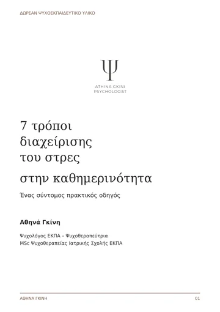
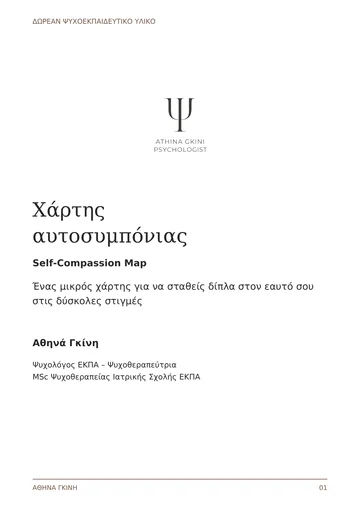

Παιδιά & άγχος
Εκδηλώσεις άγχους στην παιδική ηλικία
Αθηνά ΓκίνηΨυχολόγος ΕΚΠΑ – Ψυχοθεραπεύτρια
3′ ανάγνωση
Το άγχος είναι ένα συναίσθημα «προσανατολισμένο προς το μέλλον» που συνοδεύεται από την αντίληψη της αδυναμίας ελέγχου και πρόβλεψης ενός δυνητικά αρνητικού επερχόμενου γεγονότος.
Συχνά, το συναίσθημα της ανησυχίας μετατρέπεται σε πρόβλεψη κάποιου απειλητικού γεγονότος. Το άγχος αυξάνεται και οδηγεί σε αγχώδεις γνωστικές και συμπεριφορικές αντιδράσεις, βιώνοντας παράλληλα βιοσωματική διέγερση. Συνήθεις συμπεριφορικές αντιδράσεις άγχους είναι η απόσυρση, η αποφυγή και η αναζήτηση ασφάλειας. Οι γνωστικές αγχώδεις αντιδράσεις γίνονται εμφανείς στην αρνητική αυτοαξιολόγηση και στην ερμηνεία των γεγονότων ως απειλητικών ή καταστροφικών. Η βιοσωματική διέγερση γίνεται αντιληπτή από ακούσιες σωματικές αντιδράσεις όπως ταχυπαλμία, υπέρπνοια, μυϊκή ένταση, κ.α.
Η βιβλιογραφία προτείνει δύο πιθανές αναπτυξιακές διαδρομές των αγχωδών διαταραχών κατά την παιδική ηλικία:
Ο πρώτος τρόπος είναι η διαδρομή αθροιστικού κινδύνου όπου η ύπαρξη μιας σειράς προδιαθεσιακών παραγόντων θέτει το παιδί σε μεγαλύτερο κίνδυνο εμφάνισης παθολογικού άγχους.
Ο δεύτερος τρόπος είναι η διαδρομή εκλυτικού γεγονότος όπου ένα τραυματικό γεγονός ή η επανειλημμένη έκθεση στις αρνητικές συνέπειες ενός γεγονότος αυξάνουν την πιθανότητα αντίδρασης του ατόμου με άγχος σε παρόμοιες περιστάσεις.
Παρακάτω μπορούμε να συνοψίσουμε τέσσερα σημεία τα οποία είναι πιθανό να δηλώνουν έντονο άγχος στα παιδιά.
- Ευερεθιστότητα: Τα παιδιά ορισμένες φορές δεν μπορούν να εκφράσουν τις ανησυχίες τους λεκτικά. Έντονες συμπεριφορικές αντιδράσεις οι οποίες συμβαίνουν συχνά ως απάντηση σε συγκεκριμένες περιστάσεις κρίνεται σκόπιμο να εξετάζονται περαιτέρω. Θα πρέπει να τονίσουμε ότι η ευερεθιστότητα μπορεί να αποτελεί φυσιολογική αντίδραση σε ένα γεγονός, ειδικότερα κατά τη νηπιακή ηλικία, ωστόσο όταν παρατηρείται ως επαναλαμβανόμενο μοτίβο συμπεριφορικών απαντήσεων χρήζει διερεύνησης.
- Βιοσωματική διέγερση: Όταν ένα παιδί νιώθει έντονο άγχος είναι πιθανό να μην μπορεί να αναγνωρίσει και να ορίσει το συναίσθημά του ως αγχώδες. Αντί αυτού, είναι σε θέση να αναγνωρίσει σωματικές εκδηλώσεις άγχους όπως είναι το αίσθημα ταχυπαλμίας ή δύσπνοιας, η ζαλάδα, ο πόνος στην κοιλιά ή ο πονοκέφαλος και να παραπονιέται για αυτά. Σε αυτές τις περιπτώσεις συστήνεται η επικοινωνία με τον παιδίατρο για να διαπιστωθεί αν τα συμπτώματα προκαλούνται λόγω ιατρικής κατάστασης. Σε περίπτωση που τα συμπτώματα επιμένουν, εμφανίζονται σε συγκεκριμένες περιστάσεις και πλαίσια και δεν αποτελούν συμπτώματα κάποιας ιατρικής κατάστασης τότε είναι πιθανό να αποτελούν ενδείξεις έντονου άγχους.
- Αναζήτηση διαβεβαιώσεων: Τα παιδιά που βιώνουν υψηλά επίπεδα άγχους τείνουν να κάνουν ερωτήσεις αποζητώντας τις διαβεβαιώσεις των άλλων ώστε να νιώσουν ασφάλεια. Συχνές και εμμένουσες ερωτήσεις όπως «τι θα γίνει σε αυτή ή την άλλη περίπτωση», «τι θα συμβεί αν δεν το κάνω σωστά» είναι ερωτήσεις οι οποίες υποδηλώνουν την ανάγκη για βεβαιότητα.
- Συμπεριφορές αποφυγής: Περιστάσεις οι οποίες προκαλούν άγχος τείνουν να αποφεύγονται. Όταν τα παιδιά αγχώνονται υπερβολικά, αποφεύγουν να εμπλέκονται στις καταστάσεις που αναδύουν το άγχος ώστε να περιορίσουν τη δυσφορία.
Παράγοντες που διατηρούν το άγχος μακροπρόθεσμα είναι:
- Η αποφυγή των περιστάσεων που κρίνονται δυνητικά απειλητικές και προκαλούν άγχος.
- Η περιορισμένη ανάπτυξη κοινωνικών, συναισθηματικών και σχολικών ικανοτήτων.
- Η γνωστική μεροληψία στην ερμηνεία των καταστάσεων ως απειλητικών.
- Οι ψυχοπιεστικές ή/και τραυματικές εμπειρίες.
- Η υπερπροστατευτική ή υπερβολικά περιοριστική συμπεριφορά του φροντιστή.
Είναι σημαντικό να γνωρίζουμε ότι το άγχος είναι ένα φυσιολογικό ανθρώπινο συναίσθημα και δεν αποτελεί σε κάθε περίπτωση σύμπτωμα κάποιας διαταραχής. Η αναγνώριση του αγχώδους συναισθήματος και των εκδηλώσεών του (γνωστικών και συμπεριφορικών), η ψυχοεκπαίδευση γύρω από αυτό και η διαχείρισή του έχουν μεγάλη σημασία για τη διατήρηση της ψυχικής και σωματικής υγείας.
Αθηνά Γκίνη · Ψυχολόγος ΕΚΠΑ · M.Sc. Ψυχοθεραπείας Ιατρικής Σχολής Παν/μίου Αθηνών · Εξειδικευθείσα Συμπεριφορική Θεραπεύτρια
Δωρεάν υλικό αυτοφροντίδας
Δύο σύντομοι οδηγοί από την Αθηνά Γκίνη, για να τους διαβάσετε με τον δικό σας ρυθμό — δωρεάν.

Πρακτικός οδηγόςΔωρεάν
7 τρόποι διαχείρισης του στρες στην καθημερινότητα
Όταν η καθημερινότητα φέρνει πίεση, από πού ξεκινάς;
Αναγνώρισε την πίεση.Κάνε μια παύση.Διάλεξε ένα μικρό βήμα.

Χάρτης · άσκησηΔωρεάν
Χάρτης αυτοσυμπόνιας
Στις δύσκολες στιγμές, πώς μιλάς στον εαυτό σου;
Παρατήρησε.Δώσε χώρο.Επίλεξε μια πράξη φροντίδας.